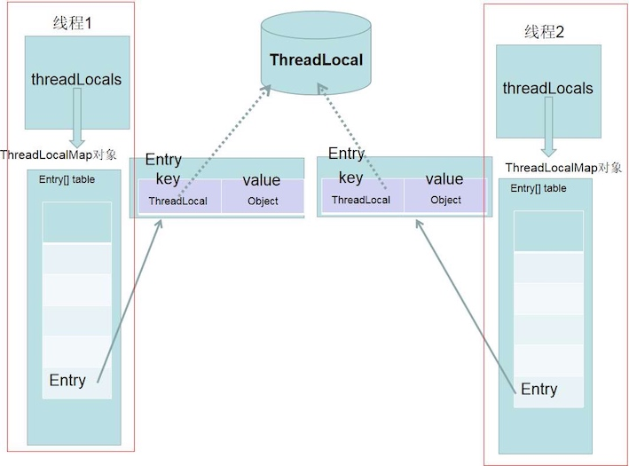
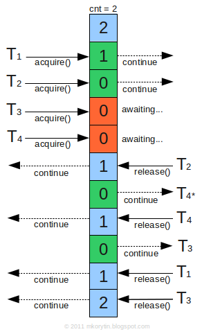
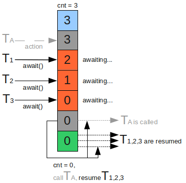
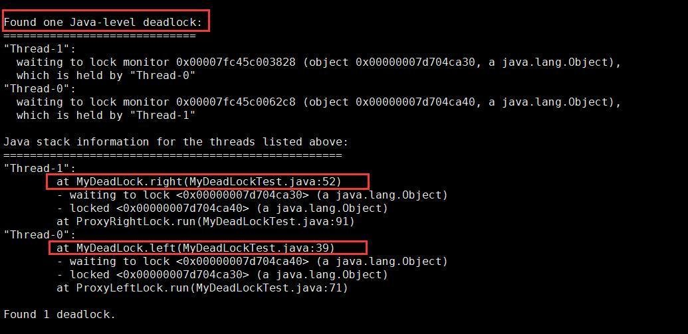

多线程基础
1 线程的基本操作¶
Java语言将"正在执行程序的主体"称之为线程。
线程启动(start)¶
Thread.start()用于启动新的线程。Thead.run()可以调用，但是并不会启动新的线程，它只会在当前线程中，串行执行run()方法。
Thread.start()主要执行以下操作：
- 启动新线程
- 调用
run()方法
Thread.start()JDK源码
public synchronized void start() {
// threadStatus = 0 表示新建线程
if (threadStatus!=0) throw new IllegalThreadStateException();
// 通知线程组，线程已经启动, 把线程加入线程组
group.add(this);
boolean started = false; // 已经启动了吗？
try {
start0(); // native方法，启动线程
started = true; // 已经启动
} finally {
try { // 启动失败
if (!started) group.threadStartFailed(this);
} catch (Throwable ignore) { // do nothing here}
}
}
线程启动有以下三种方法：
- 利用
Thread类的子类的实例来启动线程 - 利用
Runnable接口的实现类的实例启动线程 ThreadFactory中的线程创建
前两种方法比较普遍，这里不再叙述。ThreadFactory是个接口:
public interface ThreadFactory {
// Constructs a new Thread Implementations may also initialize
// priority, name, daemon status, {@code ThreadGroup}, etc.
Thread newThread(Runnable r);
}
利用该接口，可以将Runnable作为传入参数，并通过new创建Thread实例。
public class SimpleThreadFactory implements ThreadFactory {
public Thread newThread(Runnable r) {
return new Thread(r);
}
}
线程中断(Interrupt)¶
线程中断并不会使线程⽴即退出，⽽是给线程发送⼀个通知，告知⽬标线程，希望线程退出。⾄于⽬标线程接到通知后如何处理，则完全由⽬标线程⾃⾏决定。
public void Thread.interrupt() // 中断线程
public boolean Thread.isInterrupted() // 判断是否被中断
public static boolean Thread.interrupted() // 判断是否被中断，并清除当前中断状态
Thread.sleep()方法会让当前线程休眠若⼲时间，会抛出InterruptedException异常。当线程在sleep()休眠时，如果被中断，这个异常就会产⽣。
public static native void sleep(long millis)
throws InterruptedException;
等待(wait)和通知(notify)¶
为了⽀持多线程之间的协作，JDK提供了等待wait()⽅法和通知notify()/notifyAll()⽅法。这些⽅法并不属于Thread类，⽽是属于Object类。这也意味着任何对象都可以调⽤这两个⽅法。
public final void wait() throws InterruptedException
public final native void notify()
public final native void notifyAll();
当在⼀个对象实例上调⽤wait()⽅法后，当前线程就会在这个对象上等待。线程会⼀直等到其他线程调⽤了notify()/notifyAll()⽅法为⽌。这⾥还需要强调⼀点，Object.wait()⽅法并不是可以随便调⽤的 --- 它必须包含在对应的synchronzied语句中，⽆论是wait()或者notify()都需要⾸先获得⽬标对象的⼀个监视器。
wait/notify
下图显⽰了wait()和notify()的⼯作流程细节。其中T1和T2表⽰两个线程。T1在正确执⾏wait()⽅法前，⾸先必须获得object对象的监视器。⽽wait()⽅法在执⾏后，会释放这个监视器。这样做的⽬的是使得其他等待在object对象上的线程不⾄于因为T1的休眠⽽全部⽆法正常执⾏。
监视器、等待队列的原理参见操作系统概念
所有实例都拥有一个等待队列WaitSet，它是在实例的wait()方法执行后停止操作的线程的队列。在执行wait()后，线程便会暂停操作，进入等待队列WaitSet，直到下列任意一种情况发生：
- 有其他线程的
notify()方法来唤醒线程 - 有其他线程的
notifyAll()方法来唤醒线程 - 有其他线程的
interrupt()方法来唤醒线程 wait()方法超时
实例方法中的wait()和this.wait()含义相同，执行了wait()的线程将会进入this的等待队列中，这时可以说"线程正在this上wait".
若要执行wait()方法，线程必须持有锁。但如果线程进入等待队列，便会释放其实例的锁。
如果未持有锁的线程调用wait(),notify(),notifyAll()，异常 IllegalMonitorStateException就会抛出。
notify v.s. notifyAll
notify()方法会将等待队列WaitSet中的一个线程取出。假如在执行notify()方法时，正在等待队列中等待的线程不止一个，对于”这时该如何来选择线程”这个问题规范中并没有做出规定，取决于Java平台运行环境。notifyAll()方法会将等待队列WaitSet中的所有线程都取出来。
该使用notify()方法还是notifyAll()方法呢？由于notify()唤醒一个线程，所以比较快，但如果处理不好，程序便可能会停止。一般来说使用notifyAll()的代码比使用notify()时更为健壮。
等待线程结束(join)和谦让(yield)¶
有时候，⼀个线程的输⼊可能⾮常依赖于另外⼀个或者多个线程的输出，此时，这个线程就需要等待依赖线程执⾏完毕，才能继续执⾏。join方法可以实现该功能。
public final void join() throws InterruptedException
public final synchronized void join(long millis) throws InterruptedException
第⼀个join()⽅法表⽰⽆限等待，它会⼀直阻塞当前线程，直到⽬标线程执⾏完毕。第⼆个⽅法给出了⼀个最⼤等待时间，如果超过给定时间⽬标线程还在执⾏，当前线程也会因为“等不及了”，⽽继续往下执⾏。
join()的本质是让调⽤线程wait()在当前线程对象实例上。它让调⽤线程在当前线程对象上进⾏等待。当线程执⾏完成后，被等待的线程会在退出前调⽤notifyAll()通知所有的等待线程继续执⾏。
Thread.yield()⼀个静态⽅法，⼀旦执⾏，它会使当前线程让出CPU。但要注意，让出CPU并不表⽰当前线程不执⾏了。当前线程在让出CPU后，还会进⾏CPU资源的争夺，但是是否能够再次被分配到，就不⼀定了。
synchronized关键字和代码块¶
保证线程安全的基本方法是使用synchronized关键字。关键字synchronized可以有多种⽤法：
synchronzied代码块：对给定对象加锁，进⼊同步代码前要获得给定对象的锁。synchronzied实例⽅法：声明一个实例方法时，在前面加上关键字synchronized，相当于对当前实例加锁，进⼊同步代码前要获得当前实例的锁。synchronzied静态⽅法：声明一个静态方法时，在前面加上关键字synchronized，相当于对当前类加锁，进⼊同步代码前要获得当前类的锁。
如果只是想让方法中的某一部分由一个线程运行，而非整个方法，可使用synchronized代码块：
synchronized (expression) {
...
}
其中的"expression"为获取锁的实例。
如下synchronized实例方法和synchronized代码块是等效的：
synchronized void method() {
...
}
void method() {
synchronized (this) {
...
}
}
也就是说，synchronized实例方法是使用this的锁来执行线程的。
synchronized静态方法和synchronized实例方法使用的锁是不一样的。synchronized静态方法相当于以下synchronized代码块:
class Something {
// synchronized静态方法
static synchronized void method() {
...
}
// synchronized代码块
void method() {
synchronized (Something.class) {
...
}
}
}
也就是说，synchronized静态方法是使用该类的类对象的锁来执行线程的互斥处理的。 例如Something.class是Something类对应的java.long.class类的实例。
线程的状态State¶
线程状态由Thread.State定义：
public enum State {
//Thread state for a thread which has not yet started.
NEW,
// Thread state for a runnable thread. A thread in the runnable
// state is executing in the Java virtual machine but it may
// be waiting for other resources from the operating system
// such as processor.
RUNNABLE,
// Thread state for a thread blocked waiting for a monitor lock.
BLOCKED,
// Thread state for a waiting thread.
WAITING,
// Thread state for a waiting thread with a specified waiting time.
TIMED_WAITING,
// Thread state for a terminated thread.
TERMINATED;
}
线程组ThreadGroup¶
A thread group represents a set of threads. In addition, a thread group can also include other thread groups. The thread groups form a tree in which every thread group except the initial thread group has a parent.
守护线程Daemon¶
守护线程一般在后台默默地完成⼀些系统性的服务，⽐如垃圾回收线程、JIT线程。如果⽤户线程全部结束，这也意味着这个程序实际上⽆事可做了。守护线程要守护的对象已经不存在了，那么整个应⽤程序就⾃然应该结束。因此，当⼀个Java应⽤内，只有守护线程时，Java虚拟机就会⾃然退出。
可以使用Thread.setDaemon()将线程设置为守护线程daemon。
public class DaemonDemo {
public static class Daemon implements Runnable {
@Override
public void run() {
while(true) {
System.out.println("I am alive");
try {
Thread.sleep(1000);
} catch (Exception e) {
e.printStackTrace();
}
}
}
}
public static void main(String[] args) throws InterruptedException {
Thread t = new Thread(new Daemon());
t.setDaemon(true); // 需要在start方法调用之前使用
t.start();
Thread.sleep(2000);
}
}
// 结果是打印两次"I am alive"
线程优先级PRIORITY¶
在Java中，使⽤1到10表⽰线程优先级，数字越⼤则优先级越⾼。⼀般可以使⽤内置的三个静态字段表⽰：
public final static int MIN_PRIORITY = 1;
public final static int NORM_PRIORITY = 5;
public final static int MAX_PRIORITY = 10;
2 多线程程序的评价标准¶
安全性——不损坏对象¶
所谓安全性(safety)就是不损坏对象，这是程序正常运行的必要条件之一。对象损坏是指对象的状态和设计者的原意不一致，通常是指对象的字段的值并非预期值。
例如，由于设计不合理导致银行账户的可用余额变成了负数，而设计者此前并没有设想它会变成负数，这时可以说，表示银行账户的对象”损坏“了。
如果一个类即使被多个线程同时使用，也可确保安全性，那么这个类就称为线程安全(thread-safe)类。
Note
ArrayList虽然是非线程安全的，但通过执行适当的互斥处理，也可以安全地使用，称之为线程兼容(thread-compatible).
生存性——必要的处理能够被执行¶
生存性(liveness，或者活性)是指无论什么时候，必要的处理都一定能够被执行。
即使对象没有损坏，也不代表程序就一定好。例如程序运行过程中突然停止，这时由于处理已经停止，对象的状态就不会发生变化了，所以对象状态也就不会异常。虽然符合“安全性”条件，但无法运行的程序根本没有意义。
有时候安全性和生存性会相互制约。例如，有时只重视安全性，生存性就会下降。最典型的事例就是死锁。
可复用性——类可重复利用¶
可复用性(reusability)是指类能够重复利用。这虽然不是程序正常运行的必要条件，但确实提高程序质量的必要条件。类如果能够作为组件从正常运行的软件中分割出来，那么就说明这个类有很高的复用性。在编写多线程程序中，如果能够巧妙地将线程的互斥机制和方针隐藏到类中，那这就是一个可复用性高的程序，例如java.util.concurrent包中的多线程编程的类。
性能——能快速、大批量地执行处理¶
性能(performance)是指能快速、大批量地执行处理。这也不是程序正常运行的必要条件，但确实提高程序质量时以ing改考虑的条件。
评价标准总结¶
安全性和生存性是必须遵守的标准。重要的是，还要在满足这两个必要条件的基础上，考虑如果提高可复用性和性能。
3 线程池¶
为了避免频繁的创建和销毁线程，可以让创建的线程进行复用。在使⽤线程池后，创建线程变成了从线程池获得空闲线程，关闭线程变成了向线程池归还线程。
| class | description |
|---|---|
Executor |
An object that executes submitted Runnable tasks. |
ExecutorService |
An Executor that provides methods to manage termination and methods that can produce a Future for tracking progress of one or more asynchronous tasks. |
ThreadPoolExecutor |
An linkExecutorService that executes each submitted task using one of possibly several pooled threads, normally configured using Executors factory methods. |
Executors |
Factory and utility methods for Executor, ExecutorService |
ThreadPoolExecutor表示一个线程池。Executors类则扮演着线程工厂的角色，通过Executors可以取得一个拥有特定功能的线程池。在提交完成后，调⽤shutdown()⽅法关闭线程池。这是⼀个⽐较安全的⽅法，如果当前正有线程在执⾏， shutdown()⽅法并不会⽴即暴⼒地终⽌所有任务，它会等待所有任务执⾏完成后，再关闭线程池。
线程池构造函数¶
线程池构造函数的参数：
| 参数名 | 类型 | 含义 |
|---|---|---|
| corePoolSize | int | 核心线程数 |
| maxPoolSize | int | 最大线程数 |
| keepAliveTime | long | 保存存活时间 |
| workQueue | BlockingQueue | 任务队列 |
| threadFactory | ThreadFactory | 当线程池需要新的线程的时候，用来生成新的线程 |
| Handler | RejectedExecutionHandler | 由于线程池无法接收提交的任务的拒绝策略 |
- corePoolSize指的是核心线程数：线程池在完成初始化后，默认情况下，线程池中并没有任何线程，线程池会等待有任务到来时，再创建新线程去执行任务。线程池有可能会在核心线程数的基础上，额外增加一些线程，但是这些新增加的线程数有一个上线，这就是最大量maxPoolSize
- 如果线程数小于corePoolSize，即使其他工作线程处于空闲状态，也会创建一个新线程来运行新任务。
- 如果线程数等于或大于corePoolSize但少于maximumPoolSize，则将任务放入队列。
- 如果队列已满，并且线程数小于maxPoolSize，则创建一个新线程来运行任务。
- 如果队列已满，并且线程数大于或等于maxPoolSize，则拒绝该任务。
- keepAliveTime：如果线程池当前的线程数多于corePoolSize，那么如果多余的线程空闲时间超过keepAliveTime，它们就会被终止。
- threadFactory: 默认使用Executors.defaultThreadFactory()，创建出来的线程都在同一个线程组，拥有同样的NORM_PRIORITY优先级并且都不是守护线程。
- workQueue：有3种最常见的队列类型：
- 直接交接：SynchronousQueue
- 无界队列：LinkedBlockingQueue
- 有界队列：ArrayBlockingQueue
线程池种类¶
| Parameter | FixedThreadPool | CachedThreadPool | ScheduledThreadPool | SingleThreaded |
|---|---|---|---|---|
| corePoolSize | constructor-arg | 0 | constructor-arg | 1 |
| maxPoolSize | same as corePoolSize | Integer.MAX_VALUE | Integer.MAX_VALUE | 1 |
| keepAliveTime | 0 seconds | 60 seconds | 60 seconds | 0 seconds |
| workQueue | LinkedBlockingQueue | SynchronousQueue | DelayedWorkQueue | LinkedBlockingQueue |
- FixedThreadPool: 任何时间点，最多有corePoolSize个线程会处于活动状态执行任务。如果当所有线程都是活动时，有多的任务被提交过来，那么它会一致在队列中等待直到有线程可用。如果任何线程在执行过程中因为错误而中止，新的线程会替代它的位置来执行后续的任务。所有线程都会一致存于线程池中，
- Cachedthreadpool:对于任务可以比较快速地完成的情况有比较好的性能。如果线程空闲了60秒都没有任务，那么将关闭此线程并从线程池中移除。所以如果线程池空闲了很长时间也不会有问题，因为随着所有的线程都会被关闭，整个线程池不会占用任何的系统资源。
线程池里的线程数量设定为多少比较合适？
- CPU密集型：最佳线程数为CPU核心数的1-2倍左右
- IO密集型：线程数 = CPU核心数*(1+ 平均等待时间/平均工作时间)
停止线程池¶
停止线程池的正确方法是使用shutdown方法。
shutdown(): 开始按提交顺序停止现有执行线程，不接受新的线程isShutdown()：线程池是否停止isTerminated()：所有线程是不是停止awaitTermination(long timeout, TimeUnit unit)：等到既定时间后，所有线程是不是都停止shutdownNow(): 立刻停止所有正在执行线程，终止等待的线程
线程复用¶
线程池实现线程复用的原理： 相同线程执行不同任务
public void execute(Runnable command) {
if (command == null)
throw new NullPointerException();
/*
* Proceed in 3 steps:
*
* 1. If fewer than corePoolSize threads are running, try to
* start a new thread with the given command as its first
* task. The call to addWorker atomically checks runState and
* workerCount, and so prevents false alarms that would add
* threads when it shouldn't, by returning false.
*
* 2. If a task can be successfully queued, then we still need
* to double-check whether we should have added a thread
* (because existing ones died since last checking) or that
* the pool shut down since entry into this method. So we
* recheck state and if necessary roll back the enqueuing if
* stopped, or start a new thread if there are none.
*
* 3. If we cannot queue task, then we try to add a new
* thread. If it fails, we know we are shut down or saturated
* and so reject the task.
*/
int c = ctl.get();
if (workerCountOf(c) < corePoolSize) {
if (addWorker(command, true))
return;
c = ctl.get();
}
if (isRunning(c) && workQueue.offer(command)) {
int recheck = ctl.get();
if (! isRunning(recheck) && remove(command))
reject(command);
else if (workerCountOf(recheck) == 0)
addWorker(null, false);
}
else if (!addWorker(command, false))
reject(command);
}
其他 https://javadoop.com/post/java-thread-pool
4 ThreadLocal¶
两大使用场景 -- Threadlocal的用途
- 典型场景1： 每个线程需要一个独享的对象(通常是工具类, 典型需要使用的类有
SimpleDateFormat和Random)- 每个Thread内有自己的实例副本，不共享
- 典型场景2: 每个线程内需要保存全局变量(例如在拦截器中获取用户信息)，可以让不同方法直接使用，避免参数传递的麻烦。

每个Thread对象中都持有一个ThreadLocalMap成员变量：
// Thread.java
ThreadLocal.ThreadLocalMap threadLocals = null;
ThreadLocal类定义如下。ThreadLocal通过threadLocalHashCode来标识每一个ThreadLocal的唯一性。threadLocalHashCode通过CAS操作进行更新，每次hash操作的增量为0x61c88647。ThreadLocalMap是ThreadLocal的静态内部类。
public class ThreadLocal<T> {
private final int threadLocalHashCode = nextHashCode();
private static AtomicInteger nextHashCode =
new AtomicInteger();
private static final int HASH_INCREMENT = 0x61c88647;
private static int nextHashCode() {
return nextHashCode.getAndAdd(HASH_INCREMENT);
}
public ThreadLocal() {
}
static class ThreadLocalMap {
static class Entry extends WeakReference<ThreadLocal> {
/** The value associated with this ThreadLocal. */
Object value;
Entry(ThreadLocal k, Object v) {
super(k);
value = v;
}
...
}
...
}
...
}
ThreadLocal的set方法通过Thread.currentThread()方法获取了当前的线程引用，并传给了getMap(Thread)方法获取一个ThreadLocalMap的实例。getMap(Thread)方法直接返回Thread实例的成员变量threadLocals。获取了ThreadLocalMap实例以后，如果它不为空则调用ThreadLocalMap.ThreadLocalMap的set方法设值；若为空则调用ThreadLocal的createMap方法new一个ThreadLocalMap实例并赋给Thread.threadLocals。
public void set(T value) {
Thread t = Thread.currentThread();
ThreadLocalMap map = getMap(t);
if (map != null)
map.set(this, value);
else
createMap(t, value);
}
ThreadLocalMap getMap(Thread t) {
//t.threadLocals是ThreadLocal.ThreadLocalMap类型
return t.threadLocals;
}
void createMap(Thread t, T firstValue) {
t.threadLocals = new ThreadLocalMap(this, firstValue);
}
ThreadLocal 的 get 方法通过Thread.currentThread()方法获取了当前的线程引用，并传给了getMap(Thread)方法获取一个ThreadLocalMap的实例。如果ThreadLocalMap为空，则调用 initialValue()方法来初始化。
public T get() {
//先确定调用我的线程
Thread t = Thread.currentThread();
//根据调用我的线程，找到这个线程的ThreadLocalMap对象
ThreadLocalMap map = getMap(t);
if (map != null) {
//以ThreadLocal对象为key，找到对应Entry
ThreadLocalMap.Entry e = map.getEntry(this);
if (e != null) {
@SuppressWarnings("unchecked")
T result = (T)e.value; //将对应的value返回
return result;
}
}
return setInitialValue();
}
private T setInitialValue() {
T value = initialValue();
Thread t = Thread.currentThread();
ThreadLocalMap map = getMap(t);
if (map != null)
map.set(this, value);
else
createMap(t, value);
return value;
}
void createMap(Thread t, T firstValue) {
t.threadLocals = new ThreadLocalMap(this, firstValue);
}
ThreadLocalMap¶
public class ThreadLocal<T> {
static class ThreadLocalMap {
static class Entry extends WeakReference<ThreadLocal> {
/** The value associated with this ThreadLocal. */
Object value;
Entry(ThreadLocal k, Object v) {
super(k);
value = v;
}
}
// The initial capacity -- MUST be a power of two.
private static final int INITIAL_CAPACITY = 16;
// The table, resized as necessary.
// table.length MUST always be a power of two.
private Entry[] table;
// The number of entries in the table.
private int size = 0;
// The next size value at which to resize.
private int threshold; // Default to 0
ThreadLocalMap(ThreadLocal firstKey, Object firstValue) {
table = new Entry[INITIAL_CAPACITY];
int i = firstKey.threadLocalHashCode & (INITIAL_CAPACITY - 1);
table[i] = new Entry(firstKey, firstValue);
size = 1;
setThreshold(INITIAL_CAPACITY);
}
}
}
ThreadLocalMap是ThreadLocal的静态内部类。其中INITIAL_CAPACITY代表这个Map的初始容量；table是一个Entry类型的数组，用于存储数据；size代表table中的存储数目；threshold代表需要扩容时对应size的阈值。 Entry类继承了WeakReference<ThreadLocal<?>>，即每个Entry对象都有一个ThreadLocal的弱引用，ThreadLocalMap的每个Entry都是一个对key的弱引用，同时每个Entry都包含了一个对value的强引用。
弱引用的特点是如果这个对象只被弱引用关联，那么这个对象就可以被回收。正常情况下，当线程终止，保存在ThreadLocal里的value会被垃圾回收，因为没有任何强引用了。
但是如果线程不终止(线程池复用线程)，那么key对应的value就不能被回收，因为有以下的调用链：Thread -> ThreadLocalMap -> Entry(key为null) -> value。JDK已经考虑到了这个问题，所以在set，remove，rehash方法中会扫描key为null的Entry，并把对应的value设置为null，这样value对象就可以被回收。但是如果一个ThreadLocal不被使用，那么实际上set，remove，rehash方法也不会被调用，如果同时线程又不停止，那么调用链就一直存在，那么就导致了value的内存泄漏。
解决方法：在使用完ThreadLocal之后，调用remove方法。
5 锁¶
锁是一种工具，用于控制对共享资源的访问。Lock和synchronized，这两个是最常见的锁，它们都可以达到线程安全的目的，但是在使用上和功能上又有较大的不同。
synchronzied¶
针对synchronized获取锁的方式，JVM使用了锁升级的优化方式，就是先使用偏向锁优先同一线程然后再次获取锁，如果失败，就升级为CAS轻量级锁，如果失败就会短暂自旋，防止线程被系统挂起。最后如果以上都失败就升级为重量级锁。锁优化
//TODO:
Lock接口¶
Lock并不是用来代替synchronized的，而是当使用synchronized不合适或不足以满足要求的时候，来提供高级功能的。Lock接口最常见的实现类是ReentantLock。
为什么synchronized不够用？
- 效率低：锁的释放情况少，试图获得锁时不能设定超时，不能中断一个正在试图获得锁的线程
- 不够灵活(读写锁更灵活): 加锁和释放的时机单一，每个锁仅有单一的条件，可能是不够的
- 不知道是否成功获取到锁
Lock接口的主要方法
public interface Lock {
# Acquires the lock.
void lock();
# Acquires the lock unless the current thread is interrupted
void lockInterruptibly() throws InterruptedException;
boolean tryLock();
boolean tryLock(long time, TimeUnit unit) throws InterruptedException;
void unlock();
Condition newCondition();
}
Lock.lock()就是最普通的获取锁的方法。如果锁已被其他线程获取，则进行等待。lock()不会像synchronized一样在异常时自动释放锁。因此最佳实践是，在finally中释放锁，以保证发生异常时锁一定被释放。
lock.lock();
try{
//获取本锁保护的资源
System.out.println(Thread.currentThread().getName()+"开始执行任务");
}finally {
lock.unlock();
}
lock()方法不能被中断，这会带来很大的隐患：一旦陷入死锁，lock()就会陷入永久等待。所以可以用tryLock()来尝试获取锁，如果当前锁没有被其他线程占用，则获取成功，返回true，否则获取失败，返回false。相比于lock()，tryLock()可以根据是否能获取锁来决定后续程序的行为。tryLock()方法在拿不到锁时不会等待。tryLock(long time, TimeUnit unit)则会等待指定的时间。
Lock lock = ...;
if (lock.tryLock()) {
try {
// manipulate protected state
} finally {
lock.unlock();
}
else {
// perform alternative actions
}}
可见性：Lock的加解锁和synchronized有同样的内存语义，也就是说，下一个线程加锁后可以看到所有前一个线程解锁前发生的所有操作
synchronized可见性
Lock的可见性
锁的分类¶
乐观锁和悲观锁¶
悲观锁：为了确保结果的正确性，会在每次读取并修改数据时，把数据锁住，让别人无法访问该数据，来确保数据内容万无一失
- 例子：
synchronized和Lock相关类 - 悲观锁（互斥同步锁）的劣势
- 阻塞和唤醒带来的性能劣势
- 永久阻塞：如果持有锁的线程被永久阻塞，比如遇到了无限循环、死锁等活跃性问题，那么等待该线程释放锁的那几个悲催的线程，将永远也得不到执行
- 优先级反转
乐观锁：认为在处理操作的时候不会有其他线程来干扰，所以并不会锁住被操作对象。在更新的时候，去对比在修改的期间数据有没有被其他人改变过：如果没被改变过，就说明真的是只有我自己在操作，那我就正常去修改数据。如果数据和一开始拿到的不一样，说明其他人在这段时间内改过数据，那就会选择放弃、报错、重试等策略。
- 例子：一般用CAS算法实现，例如原子类、并发容器等
对于数据库来说，select for update就是悲观锁，用版本控制就是乐观锁
使用场景¶
悲观锁适合并发写入多的情况，适用于临界区持锁时间比较长的情况，悲观锁可以避免大量的无用自旋等消耗，典型情况：
- 临界区有IO操作
- 临界区代码复杂或者循环量大
- 临界区竞争非常激烈
乐观锁适合并发写入少，大部分是读取的场景，不加锁的能让读取性能大幅提高。
可重入锁和非可重入锁¶
可重入就是说某个线程已经获得某个锁，可以再次获取锁。Java中ReentrantLock和synchronized都是可重入锁，可重入锁的一个优点是可一定程度避免死锁。
public class RecursionDemo {
private static ReentrantLock lock = new ReentrantLock();
private static void accessResource() {
lock.lock();
try {
System.out.println("已经对资源进行了处理");
if (lock.getHoldCount()<5) {
System.out.println(lock.getHoldCount());
accessResource();
System.out.println(lock.getHoldCount());
}
} finally {
lock.unlock();
}
}
public static void main(String[] args) {
accessResource();
}
}
源码对比：可重入锁ReentrantLock以及非可重入锁ThreadPoolExecutor的Worker类：

公平锁和非公平锁¶
- 公平锁指的是按照线程请求的顺序，来分配锁；
- 非公平锁指的是，不完全按照请求的顺序，在一定情况下，可以插队。
- 注意：非公平也同样不提倡“插队”行为，这里的非公平，指的是“在合适的时机”插队，而不是盲目插队。
非公平锁是为了避免唤醒带来的空档期，可以提高效率：
tryLock()
tryLock()方法不遵守设定的公平规则，当有线程执行tryLock()的时候，一旦有线程释放了锁，那么这个正在tryLock()的线程就能获取到锁，即使在它之前已经有其它线程在等待队列里了。
| 优势 | 劣势 | |
|---|---|---|
| 公平锁 | 各线程公平平等，每个线程在等待一段时间后，总有执行的机会 | 更慢，吞吐量更小 |
| 不公平锁 | 更快，吞吐量更大 | 有可能产生线程饥饿，也就是某些线程在长时间内，始终得不到执行 |
共享锁和排它锁¶
读写锁：在读的地方使用读锁，在写的地方使用写锁，灵活控制，如果没有写锁的情况下，读是无阻塞的，提高了程序的执行效率。
读写锁的规则：
- 多个线程只申请读锁，都可以申请到
- 如果有一个线程已经占用了读锁，则此时其他线程如果要申请写锁，则申请写锁的线程会一直等待释放读锁。
- 如果有一个线程已经占用了写锁，则此时其他线程如果申请写锁或者读锁，则申请的线程会一直等待释放写锁。
- 总结就是：要么多读，要么一写
ReentrantReadWriteLock的读锁插队策略：
- 非公平：假设线程2和线程4正在同时读取，线程3想要写入，拿不到锁，于是进入等待队列，线程5不在队列里，现在过来想要读取。此时有两种策略：
- 策略1: 5读取。读可以插队，效率高，但是容易造成饥饿
- 策略2: 5进入等待队列。避免饥饿
- 策略的选择取决于具体锁，ReentrantReadWriteLock选择了策略2
公平锁只看队列里面有没有在排队
static final class FairSync extends Sync {
private static final long serialVersionUID = -2274990926593161451L;
final boolean writerShouldBlock() {
return hasQueuedPredecessors();
}
final boolean readerShouldBlock() {
return hasQueuedPredecessors();
}
}
非公平锁，写锁永远不需要等待：writerShouldBlock永远返回false。读锁仅在等待队列头结不是想获取写锁的线程的时候可以插队
static final class NonfairSync extends Sync {
private static final long serialVersionUID = -8159625535654395037L;
final boolean writerShouldBlock() {
return false; // writers can always barge
}
final boolean readerShouldBlock() {
/* As a heuristic to avoid indefinite writer starvation,
* block if the thread that momentarily appears to be head
* of queue, if one exists, is a waiting writer. This is
* only a probabilistic effect since a new reader will not
* block if there is a waiting writer behind other enabled
* readers that have not yet drained from the queue.
*/
return apparentlyFirstQueuedIsExclusive();
}
}
锁的升降级：支持锁的降级，不支持升级
private static void writeDowngrading() {
writeLock.lock();
try {
System.out.println(Thread.currentThread().getName() + "得到了写锁，正在写入");
Thread.sleep(1000);
readLock.lock();
System.out.println("在不释放写锁的情况下，直接获取读锁，成功降级");
} catch (InterruptedException e) {
e.printStackTrace();
} finally {
readLock.unlock();
System.out.println(Thread.currentThread().getName() + "释放写锁");
writeLock.unlock();
}
}
自旋锁和阻塞锁¶
阻塞或唤醒一个Java线程需要操作系统切换CPU状态来完成，这种状态转换需要耗费CPU时间。如果同步代码块中的内容过于简单，状态转换消费的时间有可能比用户代码执行的时间还要长。在许多场景中，同步资源的锁定时间很短，为了这一小段时间去切换线程，线程挂起和恢复现场的花费可能会让系统得不偿失。
如果物理机器有多个处理器，能够让两个或以上线程同时并行执行，就可以让后面那个请求锁的线程不放弃CPU执行时间，看看持有锁的线程是否很快会释放锁。而为了让当前线程“稍等一下”，我们需让当前线程进行自旋，如果在自旋完成后前面锁定同步资源的线程已经释放了锁，那么当前线程就可以不必阻塞而是直接获取同步资源，从而避免切换线程的开销。这就是自旋锁。
阻塞锁和自旋锁相反，阻塞锁如果遇到没拿到锁的情况，会直接把线程阻塞，直到被唤醒。
如果锁被占用的时间很长，那么自旋的线程只会白浪费处理器资源。在自旋的过程中，一直消耗CPU，所以虽然自旋锁的起始开销低于悲观锁，但是随着自旋时间的增长，开销也是线性增长的。
java.util.concurrent.atomic包下的类基本都是自旋锁的实现。
AtomicInteger的实现：自旋锁的实现原理是CAS，AtomicInteger中调用unsafe进行自增操作的源码中的do-while循环就是一个自旋操作。如果修改过程中遇到其他线程竞争导致没修改成功，就在while里死循环，直至修改成功。
// AtomicInteger
public final int getAndAddInt(Object var1, long var2, int var4) {
int var5;
do {
var5 = this.getIntVolatile(var1, var2);
} while(!this.compareAndSwapInt(var1, var2, var5, var5 + var4));
return var5;
}
可中断锁¶
如果某一线程A正在执行锁中的代码，另一线程B正在等待获取该锁，可能由于等待时间长，线程B不想等待了，想先处理其他事情，我们可以中断它，这种就是可中断锁。
在Java中，synchronized就是不可中断锁，而Lock是可中断锁。因为tryLock(time)和lockInterruptibly都能响应中断
锁优化¶
- 缩小同步代码块
- 尽量不要锁住方法
- 减少请求锁的次数
- 避免人为制造“热点”
- 锁中尽量不要再包含锁
- 选择合适的锁类型或合适的工具类
6 Atomic¶
原子类的作用和锁类似，是为了保证并发情况下线程安全。原子类相比于锁，有一定的优势：
- 粒度更细：原子变量可以把竞争范围缩小到变量级别，这是可以获得的最细粒度，通常锁的粒度都要大于原子变量的粒度
- 效率更高：通常原子类的效率会比使用锁的效率更高，除了高度竞争的情况。
| 类型 | 例子 |
|---|---|
| Atomic* 基本类型原子类 | AtomicInteger, AtomicLong, AtomicBoolean |
| Atomic*Array 数组类型原子类 | AtomicIntegerArray, AtomicLongArray, AtomicRefereceArray |
| Atomic*Reference 引用类型原子类 | AtomicReference, AtomicStampedReference, AtomicMarkableReference |
| Atomic*FieldUpdater 升级类型原子类 | AtomicIntegerFieldUpdater, AtomicLongFieldUpdater, AtomicReferenceFieldUpdater |
| Addr 累加器 | LongAddr, DoubleAddr |
| Accumulator 累加器 | LongAccumulator, DoubleAccumulator |
AtomicInteger¶
AtomicInteger常用方法
public final int get() //获取当前的值
public final int getAndSet(int newValue) //获取当前的值，并设置新的值
public final int getAndIncrement() //获取当前的值，并自增
public final int getAndDecrement() //获取当前的值，并自减
public final int getAndAdd(int delta) // 获取当前的值，并加上预期的值
boolean compareAndSet(int expect, int update) // 如果输入的数值等于预期值，
// 则以原子方式将该值设置为输入值
几个例子
/* AtomicInteger */
private final AtomicInteger atomicInteger = new AtomicInteger();
atomicInteger.getAndAdd(2);
/* AtomicIntegerArray" */
AtomicIntegerArray atomicIntegerArray = new AtomicIntegerArray(1000);
array.getAndDecrement(i);
AtomicReference¶
AtomicReference类的作用，和AtomicInteger并没有本质区别，AtomicInteger可以让一个整数保证原子性，而 AtomicReference可以让一个对象保证原子性。当然AtomicReference的功能明显比AtomicInteger强，因为一个对象里可以包含很多属性。用法和AtomicInteger类似。
AtomicIntegerFieldUpdater¶
AtomicIntegerFieldUpdater对普通变量进行升级，使用场景：偶尔需要一个原子get-set操作
public static class Candidate {
volatile int score;
}
public static AtomicIntegerFieldUpdater<Candidate> scoreUpdater =
AtomicIntegerFieldUpdater.newUpdater(Candidate.class, "score");
tom=new Candidate();
scoreUpdater.getAndIncrement(tom);
LongAddr¶
高并发下LongAddr比AtomicLong效率高，不过本质是空间换时间。竞争激烈的时候，LongAddr把不同线程对应到不同的Cell上进行修改，降低了冲突的概率，是多段锁的概念，提高了并发性。
AtomicLong每一次加法都要flush和refresh，导致很耗费资源
在内部，这个LongAddr的实现原理和刚才的AtomicLong是不同的，刚才的AtomicLong的实现原理是，每一次加法都需要做同步，所以在高并发的时候会导致冲突比较多，也就降低了效率。而LongAddr，每个线程会有自己的一个计数器，仅用来在自己线程内计数，这样依赖就不会和其他线程的计数器干扰。
LongAddr引入了分段累加的概念，内部有一个base变量和一个Cell[]数组共同参与计数：
- base变量：竞争不激烈，直接累加到该变量上
- Cell[]数组：竞争激烈，各个线程分散累加到自己的槽Cell[i]中
public long sum() {
Cell[] as = cells; Cell a;
long sum = base;
if (as != null) {
for (int i = 0; i < as.length; ++i) {
if ((a = as[i]) != null)
sum += a.value;
}
}
return sum;
}
在低竞争下，AtomicLong和LongAddr这两个类具有相似的特征。但是在竞争激烈的情况下，LongAddr的预期吞吐量要高得多，但要消耗更多的空间。LongAddr适合的场景是统计求和计数的场景，而且LongAddr基本只提供了add方法，而AtomicLong还具有cas方法。
LongAccumulator¶
LongAccumulator和LongAddr非常相似，LongAccumulator就是一个更通用版本的LongAddr。
LongAccumulator accumulator = new LongAccumulator((x, y) -> 2 + x * y, 1);
ExecutorService executor = Executors.newFixedThreadPool(8);
IntStream.range(1, 10).forEach(i -> executor.submit(() -> accumulator.accumulate(i)));
7 CAS¶
CAS(compare and swap)有三个操作数：内存值V，旧的预期值A，准备设置的新值B。当且仅当预期值A和内存值V相同时，才将内存值V修改为B，否则什么都不做，最后返回现在的内存值V。CAS的等价代码：
// 模拟CAS操作，等价代码
public class SimulatedCAS {
private volatile int value;
public synchronized int compareAndSwap(int expectedValue, int newValue) {
int oldValue = value;
if (oldValue == expectedValue) {
value = newValue;
}
return oldValue;
}
}
CAS依靠硬件指令集，在x86指令集中用cmpxchg指令完成。Java使用jdk.internal.misc.Unsafe来实现CAS底层操作，它提供了硬件级别的原子操作(compareAndSwapInt()等方法)。编译出来的结果就是一条平台相关的处理器CAS指令。J.U.C包里面的原子类，其中的compareAndSet()和getAndIncrement()等方法都使用了Unsafe类的CAS操作来实现。
存在的问题¶
CAS也有不好的地方：
- ABA问题：假设当前值为A，如果另一个线程先将A修改成B，再修改回成A，当前线程的CAS操作无法分辨当前值发生过变化。
- 自旋时间过长
8 控制并发流程¶
控制并发流程的工具类，作用就是帮助程序员更容易地让线程之间合作。让线程之间相互配合，来满足业务逻辑。比如让线程A等待线程B执行完毕后再执行等合作策略。
| 类 | 作用 | 说明 |
|---|---|---|
Semaphore |
信号量，可以通过控制“许可证”的数量，来保证线程之间的配合 | 线程只有在拿到“许可证”后才能继续运行 |
CyclicBarrier |
线程会等待，直到足够多线程达到了事先规定的数目。一旦达到触发条件，就可以进行下一步的动作 | 适用于线程之间相互等待处理结果就绪的场景 |
CountDownLatch |
和CyclicBarrier类似，数量递减到0时，触发动作 |
不可重复使用 |
Condition |
可以控制线程的“等待”和“唤醒” | 是Object.wait()的升级版 |
Semaphore¶
Semaphore(信号量): 控制某个资源可被同时访问的线程个数

无论是synchronized还是ReentrantLock，一次都只允许一个线程访问一个资源。而信号量却可以指定多个线程，同时访问某一个资源。信号量主要提供了以下构造函数：
public Semaphore(int permits)
public Semaphore(int permits, boolean fair) //第二个参数可以指定是否公平
Semaphore(int permits, boolan fair)可以设置是否要使用公平策略，如果传入true，那么Semaphore会把之前等待的线程放到FIFO的队列里，当有了新的许可证时会分发给之前等了最长时间的线程。
Semaphore的主要方法
public void acquire()
public void acquireUninterruptibly()
public boolean tryAcquire()
public boolean tryAcquire(long timeout, TimeUnit unit)
public void release()
Semaphore示例
public class SemaphoreDemo {
static Semaphore semaphore = new Semaphore(5, true);
public static void main(String[] args) {
ExecutorService service = Executors.newFixedThreadPool(50);
for (int i = 0; i < 100; i++)
service.submit(new Task());
service.shutdown();
}
static class Task implements Runnable {
@Override
public void run() {
try { // 每次要3个许可证
semaphore.acquire(3);
} catch (InterruptedException e) {
e.printStackTrace();
}
System.out.println(Thread.currentThread().getName()
+ "拿到了许可证");
try {
Thread.sleep(2000);
} catch (InterruptedException e) {
e.printStackTrace();
}
System.out.println(Thread.currentThread().getName()
+ "释放了许可证");
semaphore.release(3); // 每次释放3个许可证
}
}
}
Condition¶
Condition与可重入锁相关联。利用Condition对象，就可以让线程在合适的时间等待，或者在某一个特定的时刻得到通知，继续执行。Condition与ReentrantLock的关系类似于Object和监视器的关系。
| 对比项 | Object监视器 | Condition |
|---|---|---|
| 前置条件 | 获取对象的锁 | 调用Lock.lock获取锁，调用Lock.newCondition获取Condition对象 |
| 调用方式 | 直接调用，比如object.notify() |
直接调用，比如condition.await() |
| 等待队列的个数 | 一个 | 多个 |
| 当前线程释放锁进入等待状态 | 支持 | 支持 |
| 当前线程释放锁进入等待状态，在等待状态中不响应中断 | 不支持 | 支持 |
| 当前线程释放锁并进入超时等待状态 | 支持 | 支持 |
| 当前线程释放锁并进入等待状态直到将来的某个时间 | 不支持 | 支持 |
| 唤醒等待队列中的一个线程 | 支持 | 支持 |
| 唤醒等待队列中的全部线程 | 支持 | 支持 |
void await() throws InterruptedException;
void awaitUninterruptibly();
long awaitNanos(long nanosTimeout) throws InterruptedException;
boolean await(long time, TimeUnit unit) throws InterruptedException;
boolean awaitUntil(Date deadline) throws InterruptedException;
void signal();
void signalAll();
await()⽅法会使当前线程等待，同时释放当前锁，当其他线程中使⽤signal()或者signalAll()⽅法时，线程会重新获得锁并继续执⾏。或者当线程被中断时，也能跳出等待。这和Object.wait()⽅法很相似。awaitUninterruptibly()⽅法与await()⽅法基本相同，但是它并不会在等待过程中响应中断。singal()⽅法⽤于唤醒⼀个在等待中的线程（唤醒等待时间最长的线程）。 这和Object.nofity()方法很类似singalAll()⽅法会唤醒所有在等待中的线程。这和Obejct.notifyAll()⽅法很类似。
和Object.wait()和notify()⽅法⼀样，当线程使⽤Condition.await()时，要求线程持有相关的重⼊锁，在Condition.await()调⽤后，这个线程会释放这把锁。同理，在Condition.signal()⽅法调⽤时，也要求线程先获得相关的锁。在signal()⽅法调⽤后，系统会从当前Condition对象的等待队列中，唤醒⼀个线程。⼀旦线程被唤醒，它会重新尝试获得与之绑定的重⼊锁，⼀旦成功获取，就可以继续执⾏了。
public class ConditionDemo2 {
private int queueSize = 10;
private PriorityQueue<Integer> queue =
new PriorityQueue<Integer>(queueSize);
private Lock lock = new ReentrantLock();
private Condition notFull = lock.newCondition();
private Condition notEmpty = lock.newCondition();
public static void main(String[] args) {
ConditionDemo2 conditionDemo2 = new ConditionDemo2();
Producer producer = conditionDemo2.new Producer();
Consumer consumer = conditionDemo2.new Consumer();
producer.start();
consumer.start();
}
}
class Consumer extends Thread {
@Override
public void run() {
consume();
}
private void consume() {
while (true) {
lock.lock();
try {
while (queue.size() == 0) {
System.out.println("队列空，等待数据");
try {
notEmpty.await();
} catch (InterruptedException e) {
e.printStackTrace();
}
}
queue.poll();
notFull.signalAll();
System.out.println("从队列里取走了一个数据，队列剩余" + queue.size() + "个元素");
} finally {
lock.unlock();
}
}
}
}
class Producer extends Thread {
@Override
public void run() {
produce();
}
private void produce() {
while (true) {
lock.lock();
try {
while (queue.size() == queueSize) {
System.out.println("队列满，等待有空余");
try {
notFull.await();
} catch (InterruptedException e) {
e.printStackTrace();
}
}
queue.offer(1);
notEmpty.signalAll();
System.out.println("向队列插入了一个元素，队列剩余空间"
+ (queueSize - queue.size()));
} finally {
lock.unlock();
}
}
}
}
CountDownLatch¶
CountDownLatch的主要方法：
CountDownLatch(int count): 仅有一个构造函数，参数count为需要倒数的数值await():调用await()方法的线程会被挂起，它会等待直到count值为0才继续执行countDown(): 将count值减1，直到为0时，等待的线程会被唤起。

用法一：一个线程等待多个线程都执行完毕，再继续自己的工作
// 描述：工厂中，质检，5个工人检查，所有人都认为通过，才通过
public class CountDownLatchDemo1 {
public static void main(String[] args) throws InterruptedException {
CountDownLatch latch = new CountDownLatch(5);
ExecutorService service = Executors.newFixedThreadPool(5);
for (int i = 0; i < 5; i++) {
final int no = i + 1;
Runnable runnable = () -> {
try {
Thread.sleep((long) (Math.random() * 10000));
System.out.println("No." + no + "完成了检查。");
} catch (InterruptedException e) {
e.printStackTrace();
} finally {
latch.countDown();
}
};
service.submit(runnable);
}
System.out.println("等待5个人检查完.....");
latch.await();
System.out.println("所有人都完成了工作，进入下一个环节。");
}
}
用法二：多个线程等待某一个线程的信号，同时开始执行。
// 模拟100米跑步，5名选手都准备好了，只等裁判员一声令下，
// 所有人同时开始跑步。当所有人都到终点后，比赛结束。
public class CountDownLatchDemo1And2 {
public static void main(String[] args) throws InterruptedException {
CountDownLatch begin = new CountDownLatch(1);
CountDownLatch end = new CountDownLatch(5);
ExecutorService service = Executors.newFixedThreadPool(5);
for (int i = 0; i < 5; i++) {
final int no = i + 1;
Runnable runnable = () -> {
System.out.println("No." + no + "准备完毕，等待发令枪");
try {
begin.await();
System.out.println("No." + no + "开始跑步了");
Thread.sleep((long) (Math.random() * 10000));
System.out.println("No." + no + "跑到终点了");
} catch (InterruptedException e) {
e.printStackTrace();
} finally {
end.countDown();
}
};
service.submit(runnable);
}
//裁判员检查发令枪...
Thread.sleep(5000);
System.out.println("发令枪响，比赛开始！");
begin.countDown();
end.await();
System.out.println("所有人到达终点，比赛结束");
}
}
CyclicBarrier¶
CyclicBarrier循环栅栏和CountDownLatch很类似，都能阻塞一组线程。当有大量线程相互配合，分别计算不同任务，并且需要最后统一汇总的时候，可以使用CyclicBarrier。CyclicBarrier可以构造一个集结点，当某一个线程执行完毕，它就会到集结点等待，直到所有线程都到了集结点，那么该栅栏就会被撤销，所有线程再统一出发，继续执行剩下的任务。
1 
public class CyclicBarrierDemo {
public static void main(String[] args) {
CyclicBarrier cyclicBarrier = new CyclicBarrier(5,
() -> System.out.println("所有人都到场了， 大家统一出发！"));
for (int i = 0; i < 10; i++)
new Thread(new Task(i, cyclicBarrier)).start();
}
static class Task implements Runnable{
private int id;
private CyclicBarrier cyclicBarrier;
public Task(int id, CyclicBarrier cyclicBarrier) {
this.id = id;
this.cyclicBarrier = cyclicBarrier;
}
@Override
public void run() {
System.out.println("线程" + id + "现在前往集合地点");
try {
Thread.sleep((long) (Math.random()*10000));
System.out.println("线程"+id+"到了集合地点，开始等待其他人到达");
cyclicBarrier.await();
System.out.println("线程"+id+"出发了");
} catch (InterruptedException e) {
e.printStackTrace();
} catch (BrokenBarrierException e) {
e.printStackTrace();
}
}
}
}
CyclicBarrier v.s. CountDownLatch
- CountDownLatch: 一个线程(或者多个)， 等待另外N个线程完成某个事情之后才能执行。不可以重置。
- CyclicBrrier: N个线程相互等待，任何一个线程完成之前，所有的线程都必须等待。可以重置。
Phaser¶
Phaser类似于CyclicBarrier：让一组线程在栅栏前等待，然后当最后一个线程到达的时候一起出发。但它能更灵活使用：Phaser能够注册或者注销线程。
9 AQS¶
AQS：AbstractQueuedSynchronizer，即抽象队列同步器。它是构建锁或者其他同步组件的基础框架（如ReentrantLock、CountDownLatch、Semaphore等），JUC并发包的作者(Doug Lea)2期望它能够成为实现大部分同步需求的基础。AQS的主要使用方式是继承，子类通过继承同步器并实现它的抽象方法来管理同步状态。
AQS核心思想是，如果被请求的共享资源空闲，则将当前请求资源的线程设置为有效的工作线程，并且将共享资源设置为锁定状态。如果被请求的共享资源被占用，那么就需要一套线程阻塞等待以及被唤醒时锁分配的机制，这个机制AQS是用CLH队列锁实现的，即将暂时获取不到锁的线程加入到队列中。
- state: 在Semaphore里，表示“剩余的许可证的数量”，在CountDownLatch里，表示“还需要倒数的数量”
- state是volatile修饰的，会被并发地修改，所以所有修改state的方法都需要保证线程安全，比如getState，setState以及compareAndSetState操作来读取和更新这个状态。
获取/释放方法：
- 获取操作会依赖state变量，经常会阻塞
10 Future¶
Runnable的缺陷
- 不能有返回值
- 不能抛出checked Exception异常
Callable接口类似于Runnable，被其他线程执行任务。
public interface Callable<V> {
// Computes a result,
// or throws an exception if unable to do so.
V call() throws Exception;
}
Future的作用：
- 可以使用Future.get()来获取Callable接口返回的执行结果，还可以通过Future.isDone()来判断任务是否已经执行完了。以及取消这个任务，限时获取任务的结果等。
- 在call()未执行完毕之前，调用get()的线程会被阻塞，直到call()方法返回了结果后，此时future.get()才会得到该结果，然后主线程才会切换到runnable状态
- 所以Future是一个存储器，它存储了call()这个任务的结果，而这个任务的执行时间是无法提前确定的，因为这完全取决于call()方法执行的情况
public interface Future<V> {
boolean cancel(boolean mayInterruptIfRunning);
boolean isCancelled();
boolean isDone();
V get() throws InterruptedException, ExecutionException;
V get(long timeout, TimeUnit unit)
throws InterruptedException, ExecutionException, TimeoutException;
}
get()方法的行为取决于Callable任务的状态，只有以下5种情况：
- 任务正常完成：get()方法会立刻返回结果
- 任务尚未完成(任务还没开始或进行中): get将阻塞并直到任务完成
- 任务执行过程中抛出异常：get方法会抛出ExecutionException异常
- 任务被取消：get方法抛出CancellationException异常
- 任务超时：如果时间到了还没有结果，抛出TimeoutException异常
用法：线程池的submit方法返回Future对象
cancel()方法：取消任务的执行
- 如果这个任务还没有开始执行，那么任务会被正常的取消，未来也不会被执行，返回true
- 如果任务已经完成，或者已经取消：那么cancel()方法会执行失败，返回false
- 如果任务已经开始执行，那么这个取消方法将不会直接取消该任务，如果mayInterruptIfRunning=true，则会中断。所以Future.cancel(true)适用于任务能够处理interrupt
用FutureTask来创建Future
- 用FutureTask来获取Future和任务的结果
- FutureTask是一种包装器，可以把Callable转化成Future和Runnable，它同时实现两者的接口。所以它既可以作为Runnable被线程执行，又可以作为Future得到Callable的返回值。
- 把Callable实例当作参数，生成FutureTask的对象，然后把这个对象当作一个Runnable对象，用线程池或另起线程去执行这个Runnable对象，最后通过FutureTask获取刚才执行的结果。
FutureTask<Integer> task = new FutureTask<>(()-> new Random().nextInt(5));
ExecutorService service = Executors.newCachedThreadPool();
service.submit(task);
System.out.println("task运行结果：" + task.get());
Future的注意点
- 当for循环批量获取future的结果时，容易发生一部分线程很慢的情况，get方法调用时应使用timeout限制
- Future的生命周期不能后退: 和线程池的生命周期一样，一旦完全完成了任务，它就永远停在了“已完成”的状态，不能重头再来
附录¶
IDEA调试多线程¶
把 All 改为 Thread。如果点了 Make Default ，那么后续加上的断点都是 Thead 设置，之前加上的断点不影响。
IDEA调试死锁¶
在运行或者调试时，直接生成thread dump.
或者使用jps查看正在运行的JVM，随后使用jstack pid打印线程号为pid的Java线程栈信息。会发现有FOND Java-level deadlock这样的信息。
